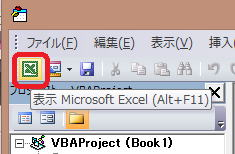
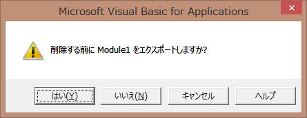

マクロとVBAの概念
・マクロとは何か
・VBAとは何か
・VBAの特徴
・Visual Basic Editorの操作と画面
・ブックとマクロの関係
・セキュリティレベル
【ここでのポイント】
今後の学習を進めるうえでも、最低限の事はできるようになっておく必要があります。
書籍やWEBで画像を見ても覚えられるものではありません。
必ず、一通り実際に操作しておきましょう。
従って、
Excel側での詳細な操作方法は出題されないはずです。
しかし、
VBE側の操作は変わっていないので出題される可能性は高いと思います。
マクロとは何か
・Excelの全機能を操作出来ます。
・操作を記録できる。
・Windowsの設定やインターネットのデータ収集も可能。
VBAとは何か
これは、Officeの複数製品にVBAが搭載されていることを指しています。
VBAの特徴
後々の章で学ぶ内容です。
イベント駆動型とは、何かのきっかけでプログラムが動き出す仕組。
例えば、
マクロを割り当てたボタンをクリック（これがきっかけ、イベントです）でマクロが起動。
オブジェクトは「対象物」。
プロパティは、オブジェクトの様子や状態。
メソッドは、オブジェクトに何かをさせる。
Visual Basic Editorの操作と画面
・プロパティ ウィンドウ ・・・ プロパティを設定
・コード ウィンドウ ・・・ マクロのVBAコードを記述

この場合は、クリックしたシートがアクティブになります。
モジュールの解放については覚えておいた方が良いでしょう。

Module1は削除されます。
いいえ：Module1は削除されます。
ブックとマクロの関係
xls ： 2003までの拡張子で、マクロの有無に関係なく保存可能
xlsx ： 2007からの「Excel ブック」、マクロ無しブックです。
マクロが入っていると警告メッセージが出ますが、「はい」で保存するとマクロが消えてしまいます。
xlsm ： 2007からの「Excel マクロ有効ブック」、マクロ付きブック
セキュリティレベル
・警告を表示してすべてのマクロを無効にする
・デジタル署名されたマクロを除き、全てのマクロを無効にする
・全てのマクロを有効にする
MOS試験以前に、社会人として知っておくべき事です。
セキュリティの概念だけ押さえておけば問題ないでしょう。
マクロのVBA記述をいくら駆使しても、このセキュリティを突破することはできせん。
当たり前ですけどね。
【業務改善の実務】
「ボタンを押しても何も動かない。」
このような事はしばしばあります。
セキュリティの警告を知らない人が、マクロを有効にしていない事によるものです。
従って、
配布先にExcelに不慣れな人がいる場合は、この警告について一言書いておくようにします。
【本サイト内の関連ページ】
マクロVBA入門：第2回．まずはマクロVBAを使う準備
Excelマクロ再入門：第1回．マクロを書く準備をする（VBAとVBE）
VBAエキスパート公式テキスト
こちらは必須として購入した方が良いでしょう。
ちょっと高いなーとは思いますが、
書籍を購入することで、学習用データが提供されています。
・サンプルブック
・VBAエキスパート模擬問題
これらが使えるようになります。
このシリーズでは、テキストを読みながら学習していることを前提とします。
同じテーマ「VBAエキスパート対策」の記事
マクロとVBAの概念
マクロの記録
VBAの構文
変数と定数
セルの操作
ステートメント
ブックの操作
シートの操作
デバッグデの基礎
マクロの実行
VBAベーシック試験対策まとめ
新着記事NEW ・・・新着記事一覧を見る
VBA100本ノック 100本目：WEBから100本ノックのリストを取得｜VBA練習問題（3月3日）
VBA100本ノック 99本目：自動席替え（行列と前後左右が全て違うように）｜VBA練習問題（3月2日）
VBA100本ノック 98本目：席替えルールが守られているか確認｜VBA練習問題（3月1日）
VBA100本ノック 97本目：Accessデータを取得（グループ集計）｜VBA練習問題（2月27日）
VBA100本ノック 96本目：Accessデータを取得（マスタ結合&抽出）｜VBA練習問題（2月26日）
VBA100本ノック 95本目：図形のテキストを検索するフォーム作成｜VBA練習問題（2月24日）
VBA100本ノック 94本目：表範囲からHTMLのtableタグを作成｜VBA練習問題（2月23日）
VBA100本ノック 93本目：複数ブックを連結して再分割｜VBA練習問題（2月22日）
VBA100本ノック 92本目：セルの色を16進で返す関数｜VBA練習問題（2月20日）
VBA100本ノック 91本目：時間計算（残業時間の月間合計）｜VBA練習問題（2月19日）
アクセスランキング ・・・ ランキング一覧を見る
1.最終行の取得（End,Rows.Count）｜VBA入門
2.RangeとCellsの使い方｜VBA入門
3.変数宣言のDimとデータ型｜VBA入門
4.マクロって何？VBAって何？｜VBA入門
5.Range以外の指定方法（Cells,Rows,Columns）｜VBA入門
6.セルのコピー&値の貼り付け（PasteSpecial）｜VBA入門
7.繰り返し処理（For Next)｜VBA入門
8.セルに文字を入れるとは（Range,Value）｜VBA入門
9.マクロはどこに書くの（VBEの起動）｜VBA入門
10.とにかく書いてみよう（Sub,End Sub）｜VBA入門
- ホーム
- マクロVBA入門編
- VBAエキスパート対策
- マクロとVBAの概念
このサイトがお役に立ちましたら「シェア」「Bookmark」をお願いいたします。
記述には細心の注意をしたつもりですが、
間違いやご指摘がありましたら、「お問い合わせ」からお知らせいただけると幸いです。
掲載のVBAコードは動作を保証するものではなく、あくまでVBA学習のサンプルとして掲載しています。
掲載のVBAコードは自己責任でご使用ください。万一データ破損等の損害が発生しても責任は負いません。